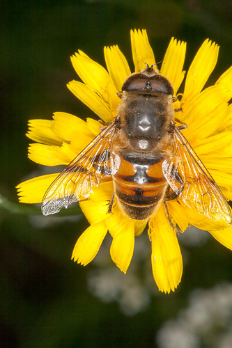
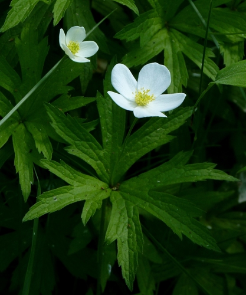
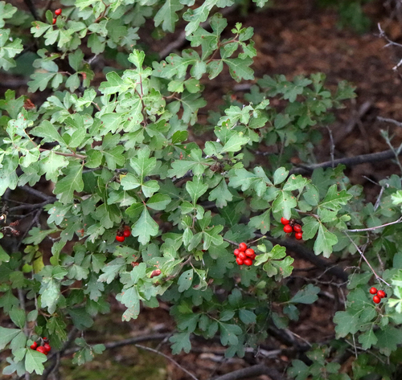
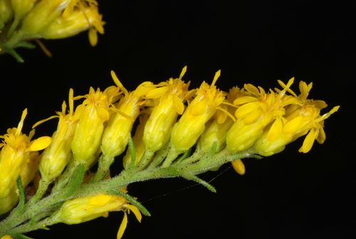
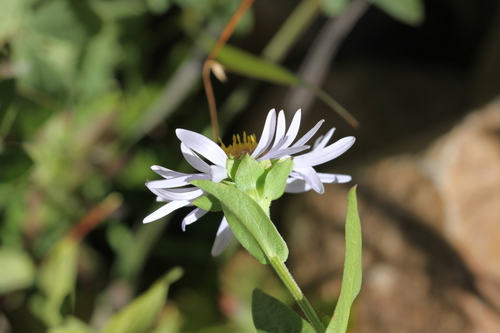
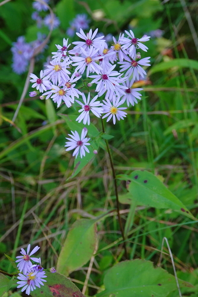
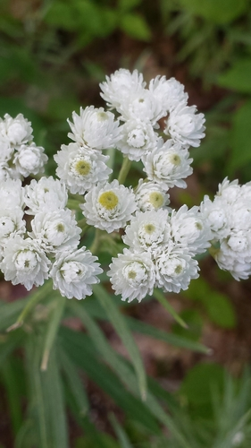
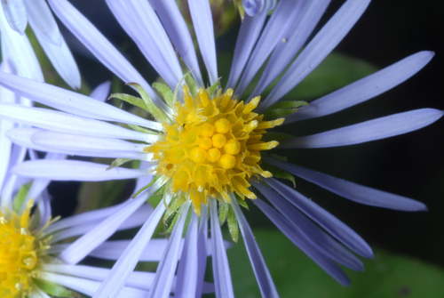
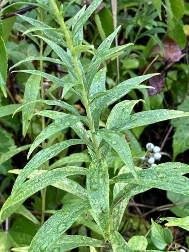
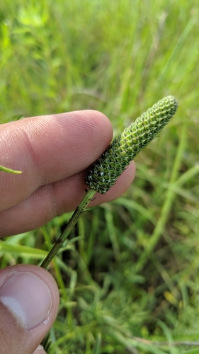

Drone Fly
Eristalis tenax insect

Honey-bee-mimicking hover fly (introduced from Europe, now widespread); adults are major generalist pollinators of composites and umbels.
40 documented plant relationships.
sips nectar at
Arctic AsterEurybia sibiricaBlanketflowerGaillardia aristata W. Terry Hunefeld, some rights reserved (CC BY), uploaded by W. Terry Hunefeld") BroomweedGutierrezia sarothraeBunchberryCornus canadensis
BroomweedGutierrezia sarothraeBunchberryCornus canadensis Douglas Goldman, some rights reserved (CC BY-SA), uploaded by Douglas Goldman") Canada GoldenrodSolidago canadensis
Canada GoldenrodSolidago canadensis KENPEI, some rights reserved (CC BY)") Common SunflowerHelianthus annuus
Common SunflowerHelianthus annuus Douglas Goldman, some rights reserved (CC BY-SA), uploaded by Douglas Goldman") FireweedChamaenerion angustifolium
FireweedChamaenerion angustifolium Douglas Goldman, some rights reserved (CC BY-SA), uploaded by Douglas Goldman") Flat-topped GoldenrodEuthamia graminifolia
Flat-topped GoldenrodEuthamia graminifolia Alan Prather, some rights reserved (CC BY), uploaded by Alan Prather") Giant HyssopAgastache foeniculum
Giant HyssopAgastache foeniculum Matt Lavin, some rights reserved (CC BY-SA)") Golden BeanThermopsis rhombifolia
Golden BeanThermopsis rhombifolia Thayne Tuason, some rights reserved (CC BY-SA)") Golden TickseedCoreopsis tinctoria
Golden TickseedCoreopsis tinctoria Joe-Pye WeedEutrochium maculatum
Joe-Pye WeedEutrochium maculatum aarongunnar, some rights reserved (CC BY), uploaded by aarongunnar") Meadow BlazingstarLiatris ligulistylis
Meadow BlazingstarLiatris ligulistylis Sarah Johnson, some rights reserved (CC BY), uploaded by Sarah Johnson") MeadowsweetSpiraea albaNanking CherryPrunus tomentosa
MeadowsweetSpiraea albaNanking CherryPrunus tomentosa Philadelphia FleabaneErigeron philadelphicus
Philadelphia FleabaneErigeron philadelphicus Matt Lavin, some rights reserved (CC BY-SA)") RabbitbrushEricameria nauseosa
RabbitbrushEricameria nauseosa Douglas Goldman, some rights reserved (CC BY-SA), uploaded by Douglas Goldman") Self-healPrunella vulgarisShrubby CinquefoilDasiphora fruticosa
Self-healPrunella vulgarisShrubby CinquefoilDasiphora fruticosa aarongunnar, some rights reserved (CC BY), uploaded by aarongunnar") Smooth AsterSymphyotrichum laeveStiff GoldenrodOligoneuron rigidumStiff Sunflower (Rhombic-leaved Sunflower)Helianthus pauciflorus
Smooth AsterSymphyotrichum laeveStiff GoldenrodOligoneuron rigidumStiff Sunflower (Rhombic-leaved Sunflower)Helianthus pauciflorus Pohled 111, some rights reserved (CC BY-SA)") Wild ChivesAllium schoenoprasum
Wild ChivesAllium schoenoprasum Michael J. Papay, some rights reserved (CC BY), uploaded by Michael J. Papay") Willow AsterSymphyotrichum lanceolatum
Willow AsterSymphyotrichum lanceolatum Douglas Goldman, some rights reserved (CC BY-SA), uploaded by Douglas Goldman") YarrowAchillea millefolium
YarrowAchillea millefolium
BroomweedGutierrezia sarothraeBunchberryCornus canadensis
Canada AnemoneAnemonastrum canadenseCanada GoldenrodSolidago canadensisCommon SunflowerHelianthus annuusFireweedChamaenerion angustifoliumFlat-topped GoldenrodEuthamia graminifolia
Fragrant SumacRhus aromaticaGiant HyssopAgastache foeniculumGolden BeanThermopsis rhombifoliaGolden TickseedCoreopsis tinctoria
Gray GoldenrodSolidago nemoralisGumweedGrindelia squarrosaJoe-Pye WeedEutrochium maculatum
Leafy AsterSymphyotrichum foliaceum
Lindley's AsterSymphyotrichum ciliolatumMaximilian SunflowerHelianthus maximilianiMeadow BlazingstarLiatris ligulistylisMeadowsweetSpiraea albaNanking CherryPrunus tomentosa
Pearly EverlastingAnaphalis margaritaceaPhiladelphia FleabaneErigeron philadelphicus
Purple-stemmed Tall Aster (Swamp Aster)Symphyotrichum puniceumRabbitbrushEricameria nauseosaSelf-healPrunella vulgarisShrubby CinquefoilDasiphora fruticosaSmooth AsterSymphyotrichum laeveStiff GoldenrodOligoneuron rigidumStiff Sunflower (Rhombic-leaved Sunflower)Helianthus pauciflorus
Tall GoldenrodSolidago altissimaWhite Prairie AsterSymphyotrichum falcatum
White Prairie CloverDalea candidaWild ChivesAllium schoenoprasumWillow AsterSymphyotrichum lanceolatumYarrowAchillea millefolium tomasz przechlewski, some rights reserved (CC BY)")
 Matt Berger, some rights reserved (CC BY), uploaded by Matt Berger")